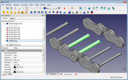
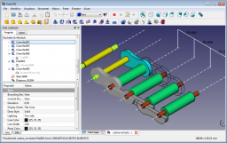

<Output text>'
There are no links that direct to this page. Sezione in costruzione.
Questi esempi sono stati costruiti con le versioni 0.12 e 0.13 di FreeCAD, quindi sono ormai obsoleti.
In questo capitolo sono riuniti alcuni esempi di semplici lavori per familiarizzare con il sistema FreeCAD, e in genere con i sistemi CAD, nella rappresentazione degli oggetti.
Si tratta solo di pochi ulteriori passi rispetto agli esempi utilizzati nella descrizione dei singoli comandi.
In questa pagina viene proposto solo l'oggetto da realizzare, senza la guida, per consentire ai nuovi utenti di riflettere e ricercare da soli un processo di esecuzione.
La guida passo a passo è disponibile in una pagina separata, raggiungibile con il link Soluzione.
Spesso gli stessi oggetti sono realizzabili con procedure differenti. La soluzione proposta è solo un esempio, altre soluzioni possono essere anche più efficaci.
Link utili:Ambiente Sketcher
Link utili:Ambiente PartDesign
Link utili:Ambiente Parte
Link utili:Ambiente Sketcher Ambiente PartDesign Ambiente Parte

Soluzione da fare

Soluzione da fare
Link utili:Ambiente Drawing
Link utili:
Pagina di prova per la descrizione del Modulo Parte : Test_Ambiente_Parte
Pagina di prova per la descrizione del Modulo PartDesign : Test_Ambiente_PartDesign
Pagina di discussione sull'aspetto grafico del wiki: WikiPages
{kind=link}
{kind=link}
{kind=link}
{kind=link}
{kind=link}
{kind=link}
{kind=link}
{kind=link}